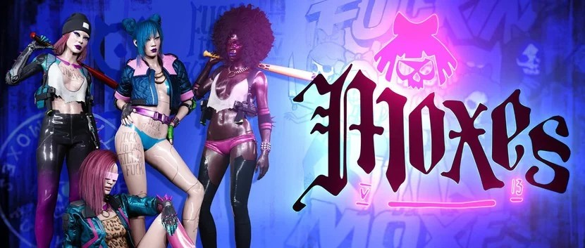
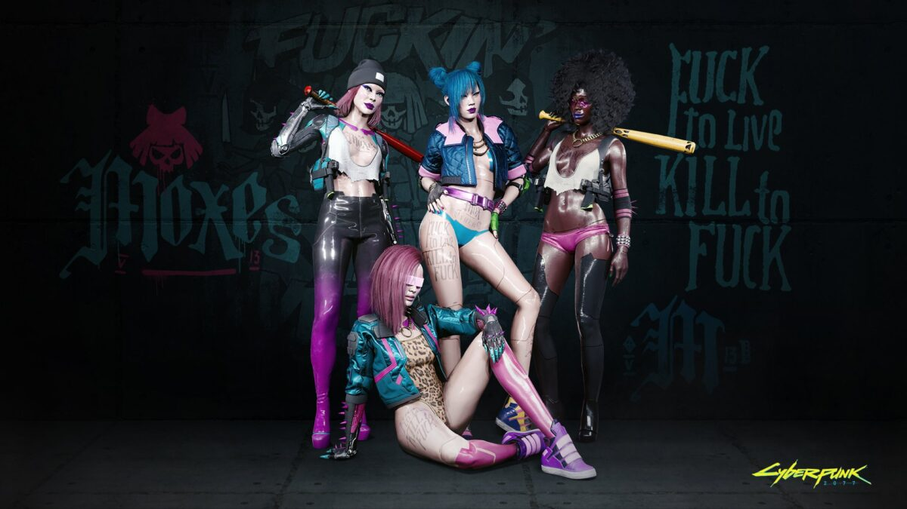

|  | |||||||||
| Anasayfa | Hayvanlar | Kaplan Pençeleri | Valentinolar | Voodoo Oğlanları | Maelstrom | Mox | 6. Cadde | Wraithler | Aldecaldolar |
| Mox'lar nispeten küçük bir çetedir, bölgesel değildir ve çoğunlukla gece kulübü "işçilerinden", anarşistlerden, punklardan ve cinsel azınlıklardan oluşur. Nefsi Müdafaa amacıyla 2067'de kurulmuştur. İsimleri, zalimlere karşı durma kararlılıklarını ifade eden eski argo terim olan "moxie" den geliyor. Mox'lar, punk estetiğinin ve ucuz modanın bir karışımı olan kıyafetler giymeyi severler, ancak genellikle hareketlerini herhangi bir şekilde kısıtlayacak kıyafetler giymezler, bu da onları tipik gece kulübü işçilerinizden daha çok gangster gibi görünmelerine neden olur. Moxes, Night City'de bir çetedir. Amblemlerinden biri de kaligrafi ile yazılmış "Moxes". İşçilerine adil davranan ve onları şiddet kullanan müşterilerden koruyan bir gece kulübü sahibi ve eski hayat kadını Elizabeth "Lizzie" Borden'in ölümünden sonra 2067'de kurulan The Moxes, kendilerine "çalışan kızları ve erkekleri şiddetten koruyanlar" olarak bahsediyor. Lizzie'nin Barında yaşıyorlar ve bölge dışına nadiren giriyorlar. Merkezlerinde birkaç Braindance istasyonu işletiyorlar. Moxes, iyi bilinen bir gece kulübü sahibi ve eski bir hayat kadını olan Elizabeth "Lizzie" Borden'in ölümünden sonra meydana gelen isyanlar sırasında oluştu. 2076'da Lizzie'nin kızlarından biri, Kaplan Pençeleri(Tyger Claws) çete üyeleri tarafından acımasızca saldırıya uğradı ve öldürüldü. Lizzie, saldırganlardan üçünü baltayla öldürerek ve vücutlarını kulübünün önünde sergileyerek onun intikamını aldı ve bunun, aynı şeyi yapan başkalarının da başına geleceğini söyledi. O gece Tyger Claws, Elizabeth'i öldürmeden önce barına baskın düzenledi ve barı yıktı. Bu eylemler, Tygers'ın öngöremeyeceği bir kargaşa yarattı. Lizzie'nin ölümü, Night City'nin her yerinde uzun süreli bir isyan dalgası başlattı ve Tyger Claws'ın üyeleri ve işletmeleri, şiddetin ana hedefi haline geldi. Bu olaylar Elizabeth Borden'i çetelerin kanunsuzluğuna ve gaddarlığına karşı bir meydan okuma sembolü olarak pekiştirdi. İdeolojik varisleri, yerini yeniden inşa ederek, "Lizzie'nin Barı" adını vererek ve özellikle gece kulübü işçileri ve cinsel azınlıklar arasında kendisini tehdit ve baskı altında hissedenleri bir araya getiren bir çete kurarak onu andılar. Moxes'in gelirinin çoğu, şu anda özel bir braindance kulübü olan Lizzie'nin Barından geliyor. Night City'nin herhangi bir bölümünü kontrol etmezler, bunun yerine tesislerini, üyelerini ve Lizzie'nin Barının yakınında faaliyet gösteren işçilerini korumaya odaklanırlar. İşlerine bırakıldıkları sürece, sabırlarını ve savaş yeteneklerini test etmeye devam eden Tyger Claws ile gergin ilişkileri olmasına rağmen, diğer çetelerle aktif olarak yüzleşmek istemiyorlar.  |